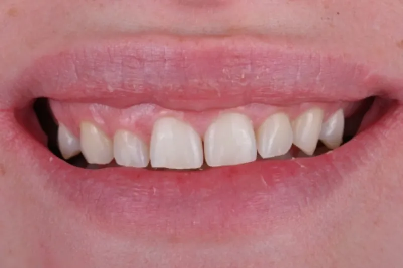
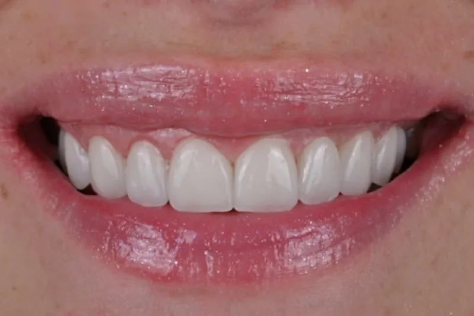

Lumineeri
Lumineeri i keramičke fasete u Nikšiću
Korekcija boje, oblika i razmaka među zubima — bez brušenja ili uz minimalno brušenje, kada stanje zuba to dozvoljava.

Uvod
Šta su lumineeri
Lumineeri su veoma tanke keramičke fasete koje se lepe na prednju površinu zuba. U Dental Studiju Mijušković u Nikšiću planiramo ih tako da prate oblik Vašeg lica i osmeha. Cilj je prirodan izgled: boja, oblik i translucencija koji liče na zdrav zub.
Kod lumineera se zub obično ne brusi ili se brusi minimalno. Da li je to moguće kod Vas, vidi se tek na pregledu.

Za koga je
Kada lumineeri mogu biti rešenje
- prebojeni zubi kod kojih izbeljivanje nije dovoljno
- razmaci između zuba
- okrnjeni ili istrošeni rubovi zuba
- blago nepravilan oblik ili veličina zuba
- želja za skladnijim osmehom
Lumineeri nisu za svakoga. Kod izraženih problema sa zagrižajem, desnima ili karijesom, prvo se rešava zdravlje zuba. Nekada je bolje rešenje izbeljivanje, kompozitna faseta ili krunica — i to ćemo Vam reći.
Postupak
Kako izgleda postupak
Konsultacija
Razgovaramo šta želite da promenite. Pregled zuba, desni i zagrižaja.
Dizajn osmeha
Planiramo oblik i dužinu zuba u odnosu na lice i usne.
Priprema
Bez brušenja ili uz minimalno brušenje, prema planu. Uzimanje otiska.
Izrada
Fasete se izrađuju po meri.
Cementiranje i kontrola
Proveravamo izgled i zagrižaj, dajemo uputstva za negu.
Broj dolazaka i trajanje zavise od plana. Okvir dobijate na konsultaciji.
Zašto kod nas
Fasete iz ruke specijaliste protetike
Fasete su protetski rad. Dr Žarko Mijušković je specijalista stomatološke protetike, pa se fasete planiraju i sa estetske i sa funkcionalne strane — da lepo izgledaju i da odgovaraju zagrižaju.
Rezultati
Pre i posle


Lumineeri i fasete: slučaj 01


Lumineeri i fasete: slučaj 02
Želite ovakav rezultat? Pozovite
Svaki plan terapije pravi se individualno, nakon kliničkog pregleda i snimka. Izgled i trajanje rada zavise od stanja zuba i desni, navika i održavanja, pa se ishod ne može unapred garantovati.
Pitanja
Pitanja o lumineerima
Da li se zubi bruse za lumineere?
Kod lumineera se zub obično ne brusi ili se brusi minimalno. Koliko je pripreme potrebno, zavisi od položaja i oblika zuba i vidi se na pregledu.
Koja je razlika između lumineera i faseta?
Lumineeri su vrsta veoma tankih keramičkih faseta. Klasične keramičke fasete mogu biti nešto deblje i tražiti više pripreme zuba.
Koliko traju lumineeri?
Keramika je otporna i ne menja boju kao prirodan zub. Trajanje zavisi od održavanja, navika (npr. škrgutanje) i redovnih kontrola. Tačan rok ne možemo da obećamo.
Da li lumineeri izgledaju prirodno?
To je cilj planiranja. Biramo boju, oblik i translucenciju tako da odgovaraju Vašem licu, a ne „najbelju“ nijansu.
Da li mogu da stavim lumineere samo na jedan ili dva zuba?
Nekada da. Zavisi od boje i oblika okolnih zuba. Razgovaraćemo o tome na pregledu.
Kako se održavaju?
Kao i prirodni zubi: pranje, konac ili interdentalne četkice i redovne kontrole. Ako škrgućete zubima, može se preporučiti zaštitna folija za noć.
Koliko koštaju lumineeri?
Cena zavisi od broja faseta i plana. Određuje se nakon pregleda.
Zakažite pregled
Razgovarajmo o Vašem osmehu
Na konsultaciji ćemo videti da li su lumineeri dobro rešenje za Vas.
ili 067 341 214 · Nikšić, Crna Gora